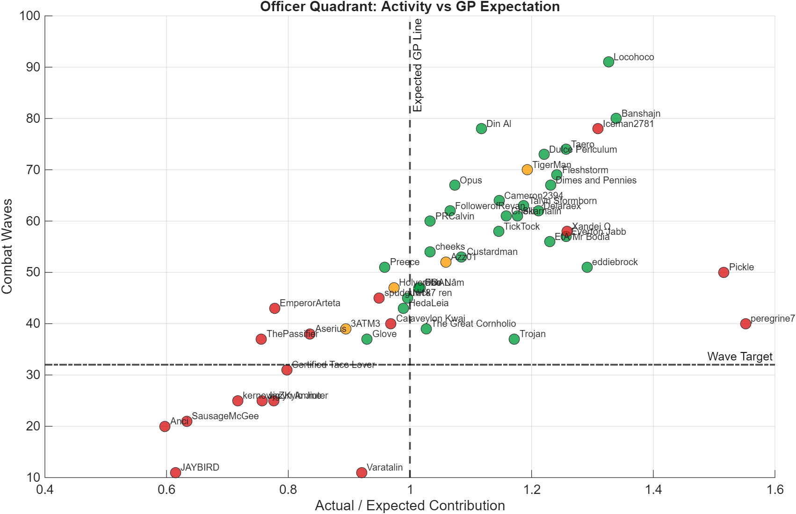
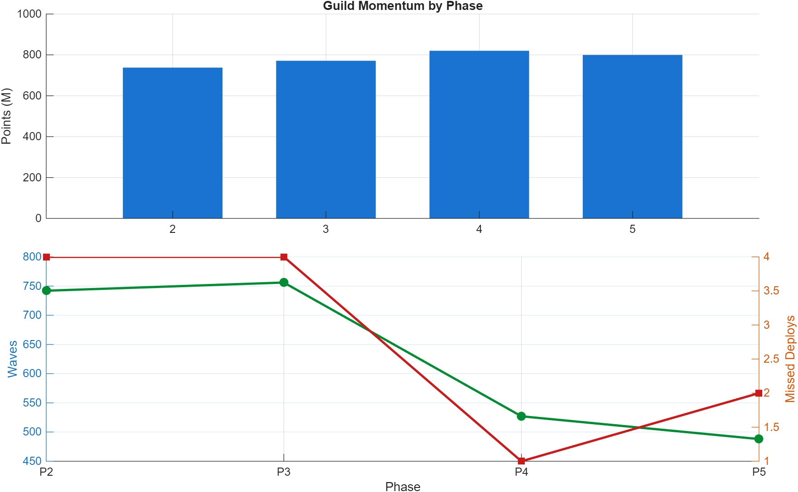
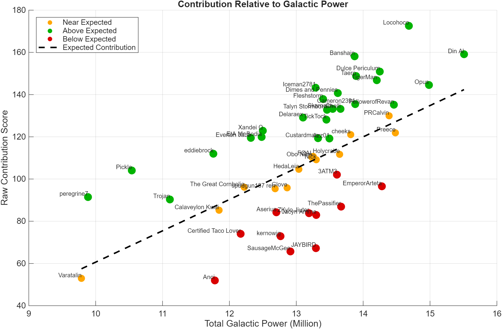
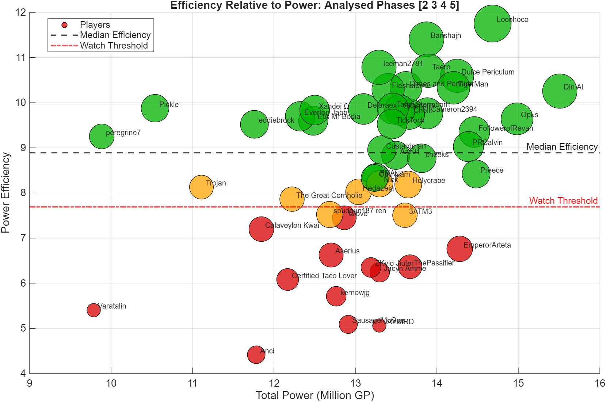

OANR Territory Battle
Officer Dashboard
Generated 2026-05-31 13:51. Analysed phases [2 3 4 5]. Detected phases [1 2 3 4 5 6].
phase-specific columns: P2 Waves, P3 Waves, P4 Waves, P5 WavesWave target: 32Platoon floor: 5
29Green
4Amber
17Red
Officer Quadrant

Best quick read: right side is above GP expectation, top side is activity.
Phase Momentum

Shows whether the guild is accelerating, fading, or missing deployment windows.
GP vs Contribution

Contribution compared with roster size. Great for fair officer conversations.
Efficiency Bubble

Bubble size follows waves, colour follows efficiency band.
Highest-Priority Follow-Ups
| Name | RiskGroup | RiskReason | Priority | Missed | Waves | PlatoonUnits | RogueActions | ExpectedRatio |
|---|---|---|---|---|---|---|---|---|
| kernowjg | Red | missed deploy, low waves, low platoons | 6 | 1 | 25 | 2 | 0 | 0.717 |
| Certified Taco Lover | Red | missed deploy, low waves, low platoons | 6 | 1 | 31 | 0 | 0 | 0.797 |
| Anci | Red | missed deploy, low waves | 5 | 2 | 20 | 17 | 0 | 0.597 |
| SausageMcGee | Red | missed deploy, low waves | 5 | 1 | 21 | 16 | 0 | 0.633 |
| Iceman2781 | Red | missed deploy, rogue actions | 4 | 1 | 78 | 34 | 5 | 1.309 |
| ThePassifier | Red | missed deploy | 3 | 1 | 37 | 10 | 0 | 0.756 |
| EmperorArteta | Red | missed deploy | 3 | 1 | 43 | 44 | 0 | 0.778 |
| Aserius | Red | missed deploy | 3 | 1 | 38 | 22 | 0 | 0.836 |
| Varatalin | Red | low waves, low platoons | 3 | 0 | 11 | 4 | 0 | 0.921 |
| spudgun187 ren | Red | missed deploy | 3 | 1 | 45 | 13 | 2 | 0.950 |
| Calaveylon Kwai | Red | missed deploy | 3 | 1 | 40 | 5 | 0 | 0.969 |
| JAYBIRD | Red | low waves | 2 | 0 | 11 | 20 | 0 | 0.615 |
| Jacyn Amme | Red | low waves | 2 | 0 | 25 | 17 | 0 | 0.757 |
| ZKylo Jiuter | Red | low waves | 2 | 0 | 25 | 9 | 2 | 0.776 |
| 3ATM3 | Amber | acceptable activity, below expected GP | 1 | 0 | 39 | 6 | 0 | 0.894 |
| Holycrabe | Amber | rogue actions | 1 | 0 | 47 | 41 | 4 | 0.974 |
Top Contributors
| Name | RiskGroup | Score | Points | Waves | PlatoonUnits | RogueActions |
|---|---|---|---|---|---|---|
| Din Al | Green | 0.933 | 81085853 | 78 | 131 | 1 |
| Locohoco | Green | 0.931 | 81615247 | 91 | 40 | 1 |
| Banshajn | Green | 0.846 | 78177881 | 80 | 26 | 1 |
| Dulce Periculum | Green | 0.814 | 77952977 | 73 | 31 | 0 |
| Opus | Green | 0.809 | 77472556 | 67 | 66 | 2 |
| TigerMan | Amber | 0.795 | 76739133 | 70 | 34 | 6 |
| Taero | Green | 0.784 | 74769905 | 74 | 8 | 0 |
| Cameron2394 | Green | 0.778 | 71523252 | 64 | 88 | 0 |
| Iceman2781 | Red | 0.772 | 65271338 | 78 | 34 | 5 |
| Dimes and Pennies | Green | 0.759 | 73772427 | 67 | 27 | 0 |
Phase Summary
| Phase | Points M | Waves | Avg Waves | DeployedPlayers | Missed | Deployed GP |
|---|---|---|---|---|---|---|
| 2 | 737.828 | 742 | 14.840 | 46 | 4 | 609453099 |
| 3 | 771.356 | 756 | 15.120 | 46 | 4 | 608791141 |
| 4 | 820.116 | 527 | 10.540 | 49 | 1 | 644177186 |
| 5 | 799.655 | 488 | 9.760 | 48 | 2 | 631197549 |
Generated Files
- TB_Player_Summary.csv
- TB_Follow_Up_List.csv
- TB_Phase_Summary.csv
- TB_Officer_Report.txt
- PNG chart pack